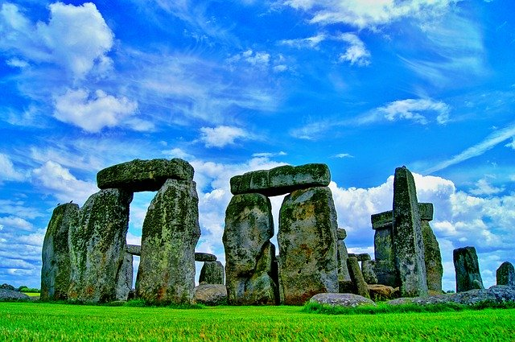

England
England is one of the countries that makes up the United Kingdom. England's neighboring countries and fellow members of the Uniteid Kingdom are Wales and Scotland. England's current population is somewhere near 56,286,961 people.
Endland's economy is one of the largest in the world, the economy is a mixed market economy adopting many princples of the free market and has several advanced social welfare programs. England is a leader in chemical and pharmaceutical sectors.

The current iteration of England's government is referred to as a constiutional monarchy mixed with a parliamentary system. England itself does not have a direct government and is instead governed directly by the Parliament of the United Kingdom.
England is home to 17 World Heritage Sites including Stonehenge, the Tower of London, Westminster Abbey, and the Roman Baths in Bath, Somerset. Stonehenge is a prehistoric monument thought to have been constructed from anywhere between 3000 BC to 2000 BC.
England has a diverse history and just as diverse architecture from ancient standing stones to Anceint Roman structures to the Tower of London to more modern wonders like the Shard. England is a wonderful country with a rich and wonderful history to explore.